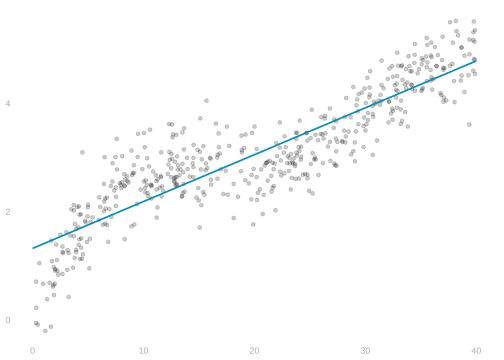
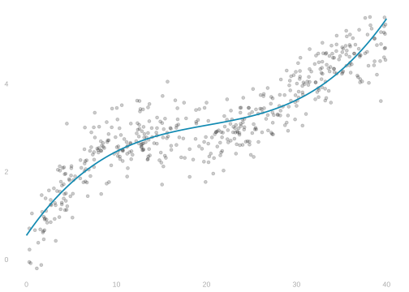
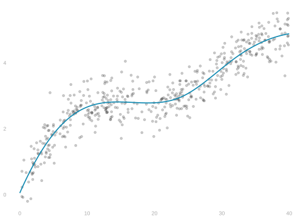
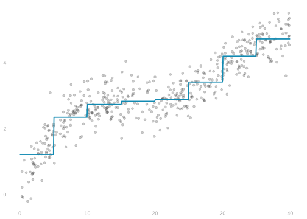

48 Linear Models 2: Polynomials and Splines
$$ \newcommand{X}{} \newcommand{Y}{}
$$
In the last meeting, we fit lines to data using least squares. Lines are a good starting point—they’re simple and interpretable. But they can only capture one kind of trend: monotone, at a constant rate. When the relationship between \(x\) and \(y\) curves, a line has to compromise. It can get the overall direction right but misses the shape.
Motivation: Why Not Just Lines?
A line doesn’t always work
If we look at the line that fits best, we’ll miss out on some of what’s there.
- It fits the upward trend on the left pretty well.
- But that means it has to miss the way the curve flattens out on the right.
Too much flexibility is a mess

- Maybe it’s easier to make sense of than the data.
- But it’s still asking us to do a lot by eye.
A cubic might work

- It’s simple and it doesn’t miss anything we can see. That’s not bad.
- We’ll need to be more precise about what we want to criticize this.
Or a piecewise function

- We could say the same about this one. It’s fine too.
Review: Least Squares with Polynomials
What it looks like
In gray, we’ve plotted observations \((X_i,Y_i)\) for \(i=1 \ldots n=500\).
In blue, we’ve plotted the curve \(\hat \mu\). \(\hat \mu(x)\) is a prediction of \(y\) at covariate value \(x\).
- The symbol \(\mu\) is written out ‘mu’ and pronounced ‘mew’ like the Pokémon.
- The thing above it is called a hat.
Least Squares
This isn’t just any curve.
- It’s the curve in my model \(\mathcal{M}\) with the smallest mean squared error.
- In this case, that model is the set of cubic polynomials.
\[ \begin{aligned} \hat \mu = \mathop{\mathrm{argmin}}_{m \in \mathcal{M}} \MSE(m) \ & \text{ where } \ && \MSE(m) = \frac{1}{n}\sum_{i=1}^n \{ m(X_i) - Y_i \}^2 \\ &\text{ and } \ && \mathcal{M} = \left\{ m(x)= \sum_{j=0}^3 \beta_j x^j : \beta \in \mathbb{R}^4 \right\}. \end{aligned} \]
Terminology
In Math and CS, we call the thing a function takes as input its argument.
- We’d say something like \(\MSE\) takes one argument: a curve \(m\).
- \(\hat \mu\) is the argument that minimizes \(\MSE\), hence argmin.
Residuals
The errors our fitted curve makes are called residuals.
\[ \underset{\text{residual}}{\hat\varepsilon_i} = \underset{\text{observed}}{Y_i} - \underset{\text{prediction}}{\hat\mu(X_i)} \]
\(\MSE(m)\) is the sum of the squared residuals we’d have if our fitted curve were \(m\).
Minimizing MSE
Our model, like most regression models, contains infinitely many curves. It might seem like it’d be hard to find the one that minimizes \(\MSE(m)\). We can’t just try them all out. But finding this curve is a relatively simple exercise.
The curves in our model \(\mathcal{M}\) are cubic polynomials.
\[ m_\beta(x) = \beta_0 + \beta_1 x + \beta_2 x^2 + \beta_3 x^3 \]
They can be described by the four coefficients \(\beta_0\ldots \beta_3\). This means we can think of \(\MSE\) as a function of this vector \(\beta \in \mathbb{R}^4\). And think of \(\hat \mu\) as the curve described by the coefficients that minimize it.
\[ \begin{aligned} \hat \mu = \sum_{j=0}^3 \hat\beta_j x^j \ &\quad \text{ where } \ &&\hat \beta = \mathop{\mathrm{argmin}}_{\beta \in \mathbb{R}^4} \MSE(\beta) \\ &\quad \text{ and }\ &&\MSE(\beta) = \frac{1}{n}\sum_{i=1}^n \left\{ \underset{m_{\beta}(X_i)}{\sum_{j=0}^3 \beta_j X_i^j} - Y_i \right\}^2. \end{aligned} \]
Vector Notation
We can write things compactly if we have notation for a vector of basis functions.
\[ m_\beta(x) = \beta_0 + \beta_1 x + \beta_2 x^2 + \beta_3 x^3 = \phi(x)^T \beta \quad \text{ where } \quad \phi(x) = \begin{pmatrix} 1 \\ x \\ x^2 \\ x^3 \end{pmatrix}. \]
For example, we can fit our last characterization of \(\hat \mu\) on one line.
\[ \hat \mu(x) = \phi(x)^T \hat\beta \quad \text{ where } \quad \hat \beta = \mathop{\mathrm{argmin}}_{\beta \in \mathbb{R}^4} \frac{1}{n}\sum_{i=1}^n \left\{ \underset{m_{\beta}(X_i)}{\phi(X_i)^T \beta } - Y_i \right\}^2. \]
Terminology
- We often call \(\phi(x)\) the feature vector for \(x\).
- And we call its elements \(\{\phi(x)\}_j = \phi_j(x)\) features.
- \(A\) is for apple; think \(\phi\), the greek \(f\), for feature.
- In this model, our features are powers of \(x\).
Generalization
None of this is specific to the cubic polynomial model. Every linear model can be described in essentially the same way.
\[ \mathcal{M} = \left\{ m(x) = \phi(x)^T \beta : \beta \in \mathbb{R}^{k+1} \right\} \ \text{ for some feature vector } \ \phi(x) = \begin{pmatrix} \phi_0(x) \\ \phi_1(x) \\ \vdots \\ \phi_{k}(x) \end{pmatrix}. \]
We call the number of features we need, which is \(k+1\) above, the dimension of the linear model.
Shorthand
Since we’re always considering all coefficients \(\beta \in \mathbb{R}^{k+1}\),
- We can specify a model by just saying what the features are.
- Or equivalently by giving the formula \(m_\beta(x)\).
\[ \text{ We might say, for example, the model } \ m_{\beta}(x) = \beta_0 + \beta_1 x + \beta_2 x^2. \]
Example: The Piecewise-Constant Model
\[ \mathcal{M} = \left\{ m(x) = \beta_0 + \sum_{j=1}^k \beta_j 1(x \ge x_j) : \beta \in \mathbb{R}^{k+1} \right\} \]

Example: The Cubic Spline Model
\[ \mathcal{M} = \left\{ m(x) = \beta_0 + \beta_1 x + \beta_2 x^2 + \beta_3 x^3 + \sum_{j=1}^k \beta_{j+3} (x-x_j)^3 1(x \ge x_j) : \beta \in \mathbb{R}^{k+1} \right\} \]
Linear Models as Vector Spaces
What they are
A linear model is a vector space of functions. That is, a set of functions you don’t leave when you
- scale them up or down: \(m \in \mathcal{M} \implies \alpha m \in \mathcal{M}\) for \(\alpha \in \mathbb{R}\).
- add them together: \(m_1,m_2 \in \mathcal{M} \implies m_1 + m_2 \in \mathcal{M}\).
Polynomials of any order \(k\)
\[ \mathcal{M} = \left\{ m(x)=\beta_0 + \beta_1 x + \ldots + \beta_k x^k : \beta \in \mathbb{R}^{k+1} \right\}. \]
Cubic splines with knots at points \(x_1 \ldots x_k\)
\[ \begin{aligned} \mathcal{M} &= \left\{ \text{ twice-differentiable piecewise-cubic functions with breaks at }\ x_1 \ldots x_k \ \right\} \\ &= \left\{ m(x)=\beta_0 + \beta_1 x + \beta_2 x^2 + \beta_3 x^3 + \sum_{j=1}^k \beta_{3+j} (x-x_j)^3 1(x \ge x_j) : \beta \in \mathbb{R}^{k+4} \right\}. \end{aligned} \]
We can write any linear model as the set of all linear combinations of some basis functions. Classic linear algebra stuff: vector spaces have a basis.
\[ \mathcal{M} = \left\{ m(x) = \beta_0 \phi_0(x) + \beta_1 \phi_1(x) + \ldots + \beta_k \phi_k(x) : \beta \in \mathbb{R}^{k+1}\right\}. \]
Notation
\[ \mathcal{M} = \left\{ m(x) = \beta_0 \phi_0(x) + \beta_1 \phi_1(x) + \ldots + \beta_k \phi_k(x) : \beta \in \mathbb{R}^{k+1} \right\}. \]
If we let \(\phi(x) \in \mathbb{R}^{k+1}\) be the vector of basis functions, we can write it compactly.
\[ \mathcal{M} = \left\{ \phi(x)^T \beta : \beta \in \mathbb{R}^{k+1} \right\} \quad \text{ for } \quad \phi(x) = \begin{pmatrix} \phi_0(x) \\ \phi_1(x) \\ \vdots \\ \phi_{k}(x) \end{pmatrix} \]
Sometimes we call \(\phi(x)\) a basis expansion or feature vector. E.g., it’s
\[ \phi(x) = \begin{pmatrix} 1 \\ x \\ \vdots \\ x^k \end{pmatrix} \ \text{ for polynomials }, \quad \phi(x) = \begin{pmatrix} 1 \\ x \\ x^2 \\ x^3 \\ (x-x_1)^3 1(x \ge x_1) \\ \vdots \\ (x-x_k)^3 1(x \ge x_k)\end{pmatrix} \ \text{ for splines.} \]
Curves and coefficients
If we know the coefficients \(\beta_0 \ldots \beta_k\), we know the curve. And vice-versa. We’ll have a shorthand for the curve determined by a coefficient vector \(\beta\).
\[ m_{\beta}(x) = \phi(x)^T \beta = \beta_0 \phi_0(x) + \ldots + \beta_k \phi_k(x). \]
And in these terms, our model is
\[ \mathcal{M} = \left\{ m_{\beta} : \beta \in \mathbb{R}^{k+1} \right\}. \]
And we can, for example, write the derivatives of the curve \(m_{\beta}\). The \(j\)th partial is the \(j\)th basis function.
\[ \frac{\partial}{\partial \beta_j} m_{\beta}(x) = \phi_j(x). \]
Local Regression
If we want fit to be good around a specific point, we use weighted least squares to emphasize fit there. Fitting a small area lets us get away with simpler models.
\[ \hat \mu = \mathop{\mathrm{argmin}}_{m \in \mathcal{M}} \MSE_w(m) \quad \text{ where } \quad \MSE_w(m) = \frac{1}{n}\sum_{i=1}^n w(X_i) \{ m(X_i) - Y_i \}^2 \]
Think Taylor expansion.
- Lines can approximate differentiable curves in a small neighborhood.
- Quadratics can approximate twice-differentiable curves in a bigger one.
Multivariate Regression
Most of the time, we have more than one covariate.
- We have \(X_{i1}, X_{i2}, \ldots X_{id}\).
- Or, if we prefer, we have a vector valued covariate.
\[ X_i = \begin{pmatrix} X_{i1} \\ X_{i2} \\ \vdots \\ X_{id} \end{pmatrix} \in \mathbb{R}^d. \]
e.g., we might have
- \(X_{i1}=\text{age}\) of person \(i\)
- \(X_{i2}=\text{education}\) of person \(i\) (years of schooling)
- \(X_{i3}=\text{hours worked per week}\) for person \(i\)
This is not all that different from what we’re used to. We’re already working with a vector of features. Now these features are functions of a vector of covariates.
\[ \phi(X_i) = \begin{pmatrix} \phi_0(X_{i1}, \ldots, X_{id}) \\ \phi_1(X_{i1}, \ldots, X_{id}) \\ \vdots \\ \phi_k(X_{i1}, \ldots, X_{id}) \end{pmatrix} \]
Multivariate polynomial models
The general quadratic model
\[ m_{\beta}(x) = \beta_0 + \beta_1 x_1 + \beta_2 x_2 + \beta_3 x_1^2 + \beta_4 x_2^2 + \beta_5 x_1 x_2. \]
- This is the sort of polynomial you get in a multivariate Taylor series.
- This means it contains a good local approximation to every twice-differentiable function.
The additive quadratic model
\[ m_{\beta}(x) = \beta_0 + \beta_1 x_1 + \beta_2 x_2 + \beta_3 x_1^2 + \beta_4 x_2^2. \]
This is the sum of quadratics in our two variables.
It’s missing the \(x_1 x_2\) term. We call this term the interaction of \(x_1\) and \(x_2\).
Sometimes we need that for good local approximation.
It cannot, for example, represent some fairly common food preferences.
- You like food with salt
- You like coffee
- But you don’t like salt in your coffee.
What sign would \(\beta_5\) have in this example?
We call models like this additive because we add together the contributions of each covariate rather than allowing them to interact.
Models with binary covariates
The general quadratic model
\[ m_{\beta}(x) = \beta_0 + \beta_1 x_1 + \beta_2 x_2 + \beta_3 x_1^2 + \beta_4 x_2^2 + \beta_5 x_1 x_2. \]
If \(x_1\) is binary, i.e. either \(0\) or \(1\), then we don’t need the \(x_1^2\) term. If we included both terms, we’d have redundant coefficients, as \(x_1=x_1^2\).
\[ m_{\beta}(x) = \beta_0 + (\beta_1 + \beta_3) x_1 + \beta_2 x_2 + \beta_4 x_2^2 + \beta_5 x_1 x_2. \]
The general quadratic model for binary \(x_1\)
\[ m_{\beta}(x) = \beta_0 + \beta_1 x_1 + \beta_2 x_2 + \beta_4 x_2^2 + \beta_5 x_1 x_2. \]
The general quadratic model for binary \(x_1\) and \(x_2\)
\[ m_{\beta}(x) = \beta_0 + \beta_1 x_1 + \beta_2 x_2 + \beta_5 x_1 x_2. \]
This is maybe easiest to see with polynomials, but it’s true generally. If \(x_1\) is binary, we don’t need multiple features that involve it alone.
Both of these models have redundant coefficients for binary \(x_1\):
\[ \begin{aligned} m_{\beta}(x) &= \beta_0 + \beta_1 1(x_1 \ge 1) + \beta_2 1(x_1 \ge 2) + \beta_3 1(x_1 \ge 3) + \ldots \\ m_{\beta}(x) &= \beta_0 + \beta_1 \sin(\pi x_1) + \beta_2 \sin(2\pi x_1) + \beta_3 \sin(3\pi x_1) + \ldots \end{aligned} \]
This model doesn’t look all that quadratic. It differs from a line only in that it includes the interaction term \(x_1 x_2\). Often we call this an interactive model instead of a quadratic one.
Terminology
- We call \(\beta_1\) and \(\beta_2\) the main effects of \(x_1\) and \(x_2\) respectively.
- Most of the time we think of these as larger than interaction effects.
- Salt in coffee is probably an exception.
Additive vs Interactive Models: Two Binary Covariates
Interactive:
\[ m_{\beta} = \beta_0 + \beta_1 x_1 + \beta_2 x_2 + \beta_3 x_1 x_2. \]
\[ \begin{array}{c||c|c|} \hline\hline x_2=1 & \beta_0 + \beta_2 & \beta_0 + \beta_1 + \beta_2 + \beta_3 \\ x_2=0 & \beta_0 & \beta_0 + \beta_1 \\ \hline\hline & x_1=0 & x_1=1 \end{array} \]
This is completely general. It can take on any four values in the four covariate configurations.
Additive:
\[ m_{\beta} = \beta_0 + \beta_1 x_1 + \beta_2 x_2 \]
\[ \begin{array}{c||c|c|} \hline\hline & \beta_0 + \beta_2 & \beta_0 + \beta_1 + \beta_2 \\ & \beta_0 & \beta_0 + \beta_1 \\ \hline\hline & x_1=0 & x_1=1 \end{array} \]
This is not general. If \(x_1=1\) and \(x_2=1\) are good individually, they’re better together.
Additive Models: Three Binary Covariates
\[ m_{\beta} = \beta_0 + \beta_1 x_1 + \beta_2 x_2 + \beta_3 x_3. \]
\(x_3=0\):
\[ \begin{array}{||c||c|c|} \hline\hline x_2=1 & \beta_0 + \beta_2 & \beta_0 + \beta_1 + \beta_2 \\ x_2=0 & \beta_0 & \beta_0 + \beta_1 \\ \hline\hline & x_1=0 & x_1=1 \end{array} \]
\(x_3=1\):
\[ \begin{array}{||c||c|c|} \hline\hline x_2=1 & \beta_0 + \beta_2 + \beta_3 & \beta_0 + \beta_1 + \beta_2 + \beta_3 \\ x_2=0 & \beta_0 + \beta_3 & \beta_0 + \beta_1 + \beta_3 \\ \hline\hline & x_1=0 & x_1=1 \end{array} \]
- The number of coefficients grows slowly with the number of covariates.
- But we’re filling in a lot of our predictions table with made up stuff.
Interactive Models: Three Binary Covariates
\[ m_{\beta} = \beta_0 + \beta_1 x_1 + \beta_2 x_2 + \beta_3 x_3 + \beta_4 x_1 x_2 + \beta_5 x_1 x_3 + \beta_6 x_2 x_3 + \beta_7 x_1 x_2 x_3. \]
\(x_3=0\):
\[ \begin{array}{||c||c|c|} \hline\hline x_2=1 & \beta_0 + \beta_2 & \beta_0 + \beta_1 + \beta_2 + \beta_4 \\ x_2=0 & \beta_0 & \beta_0 + \beta_1 \\ \hline\hline & x_1=0 & x_1=1 \end{array} \]
\(x_3=1\):
\[ \begin{array}{||c||c|c|} \hline\hline x_2=1 & \beta_0 + \beta_2 + \beta_3 + \beta_6 & \sum_{j=0}^7 \beta_j \\ x_2=0 & \beta_0 + \beta_3 & \beta_0 + \beta_1 + \beta_3 + \beta_5 \\ \hline\hline & x_1=0 & x_1=1 \end{array} \]
- The number of coefficients grows quickly with the number of covariates.
- But we’re not making anything up.
- We can predict whatever we want for each configuration of \(x_1,x_2,x_3\).
Additive vs Interactive Models: One Binary and One Continuous Covariate
If we have one binary covariate and one continuous one, the binary one can enter additively or interactively.
Additively. We fit one curve to the continuous covariate and add an intercept for the binary one.
Interactively. We fit two curves to the continuous covariate.
Linear case:
\[ \begin{aligned} m_{\beta}(x) &= \beta_0 + \beta_1 x_1 + \beta_2 x_2 && \text{ additive } \\ m_{\beta}(x) &= \beta_0 + \beta_1 x_2 + \beta_2 x_2 + \beta_3 x_1 x_2 && \text{ interactive } \end{aligned} \]
Cubic case:
\[ \begin{aligned} m_{\beta}(x) &= \beta_0 + \beta_1 x_1 + \beta_2 x_1^2 + \beta_3 x_1^3 + \beta_4 x_2 && \text{ additive } \\ m_{\beta}(x) &= \beta_0 + \beta_1 x_2 + \beta_2 x_1^2 + \beta_3 x_1^3 + \beta_4 x_2 + \beta_5 x_1 x_2 + \beta_6 x_1^2 x_2 + \beta_7 x_1^3 x_2 && \text{ interactive } \end{aligned} \]
where \(x_1=\text{age}\) and \(x_2 = 1(\text{college degree})\).
Multiple Continuous Covariates
When we have multiple continuous covariates, coming up with models gets pretty complicated.
Additive models are easy, but they’re limited in what they can express.
\[ m_{\beta}(x) = \beta_0 + \beta_1 x_1 + \beta_2 x_2 + \beta_3 x_1^2 + \beta_4 x_2^2. \]
We tend to base our models on series expansions of functions. Based on Taylor series we might use the general quadratic model.
\[ m_{\beta}(x) = \beta_0 + \beta_1 x_1 + \beta_2 x_2 + \beta_3 x_1^2 + \beta_4 x_2^2 + \beta_5 x_1 x_2. \]
Based on Fourier series we might use something else.
\[ \begin{aligned} m_{\beta}(x) &= \beta_0 + \beta_1 \sin(\pi x_1) + \beta_2 \sin(\pi x_2) + \beta_3 \sin(2\pi x_1) \\ &+ \beta_4 \sin(2\pi x_2) + \beta_5 \sin(\pi (x_1+x_2)) \end{aligned} \]
But if we have a lot of data and want a flexible model, these — high order polynomials, etc. — get pretty complicated and hard to interpret. For the most part, people use local regression with simple models, e.g. they fit constant, linear, or quadratic models near each point \(x\).